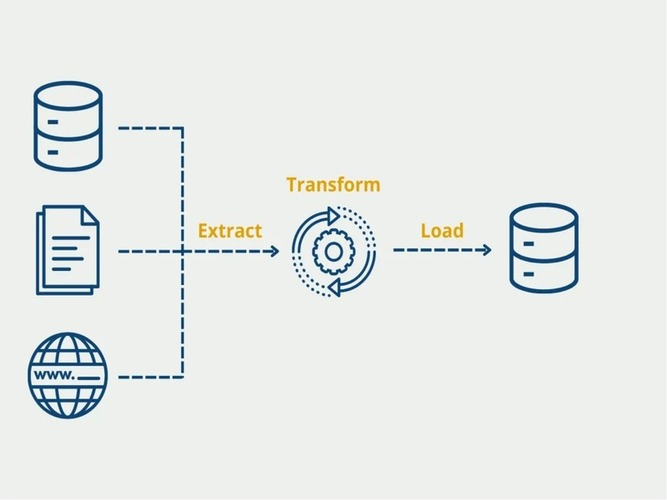

Projects 💡
NLP based Sentiment Analysis using Transformers
Developed a sentiment analysis model to classify restaurant reviews and provide timely insights for improving dining experiences. The project leverages BERT(base) model, wherein using PyTorch the first three transformer layers were frozen to enhance efficiency. After preprocessing and adding a sentiment column, the model classified reviews as 'Positive,' 'Neutral,' or 'Negative,' achieving 82% testing accuracy. The model performed well with 'Positive' and 'Neutral' reviews but encountered challenges with 'Negative' predictions, likely due to label imbalance. A custom classifier with linear layers and 40% dropout ensures robust performance. This automation helps restaurants quickly process large volumes of feedback, identifying trends and addressing customer concerns.
PHD Annual Review System
The PhD Annual Review System, developed by my team for Texas A&M University, is a web application designed to streamline the annual review process, addressing user dissatisfaction with the previous, labor-intensive system. Serving PhD students, faculty, and administrators, it offers a user-friendly, centralized platform for document submission, evaluation, and progress tracking, supporting up to 8,000 users. Key features include an efficient administrator view, which reduces review time by 25% by eliminating the need for faculty to switch between screens, and robust reporting capabilities that aid data-driven decision-making. This application improves the PhD experience and enhances program quality.
Motion image classifier
As a Graduate Assistant at Texas A&M University’s Mays Business School, I contributed to research on the impact of dynamic versus static images on social media. I developed an image classification model that achieved 92.4% accuracy, marking a 12.4% improvement over the previous model and reducing model building time from 6 hours to 20 minutes. Leveraging TensorFlow and transfer learning with ResNet50, VGG16, and CNN architectures, I enhanced both efficiency and accuracy. This model enables more effective analysis of image engagement on social media, providing insights that can guide marketing strategies and content optimization.
Loan Repayment Predictor Application
Following Loan Prediction System leverages machine learning to forecast loan repayment probability accurately. Using Python and various libraries, we cleaned and preprocessed a dataset from multiple sources, performed exploratory data analysis, and applied feature engineering to identify key predictive attributes. XGBoost emerged as the best-performing algorithm, delivering the highest accuracy and recall. The application, deployed via Flask and Render, offers easy accessibility for users and banks. This model enhances loan management, reduces fraud, and minimizes both bank and applicant wait times, streamlining the loan approval process.
Covid 19 Real time Mask Detection
This Real-Time Mask Detection System improves public safety by continuously monitoring mask compliance in real-time through surveillance camera feeds. Built using TensorFlow and MobileNet, it efficiently processes live video streams to detect if individuals are wearing masks, reaching an impressive 95.5% training and 93.5% testing accuracy. The model is highly portable with a lightweight 13.2 MB size, enabling quick and seamless deployment on multiple platforms. Leveraging a dataset of 10,000 images, along with OpenCV’s face detection, this system accurately identifies faces and masks even in crowded settings. This solution not only enhances health guideline compliance but also helps organizations protect their employees, customers, and the broader community amidst ongoing pandemic concerns.
COVID-19 Vaccination Portal

Developed and deployed a full-stack website for our institution to efficiently manage the vaccination statuses of 2,500 engineering students, creating a digital data management portal that reduced search time for vaccination status by 80%. Initially the project was developed on localhost XAMPP, and later deployed to AWS for better scalability and accessibility. With MySQL handling database and PHP for seamless database connectivity, an intuitive, responsive frontend for a user-friendly experience were developed too. To streamline reporting, database views were implemented that dynamically generated lists of fully and partially vaccinated students, enabling quick access to detailed vaccination records. This system facilitated a more organized and effective approach to health management within the institution during harsh COVID times.